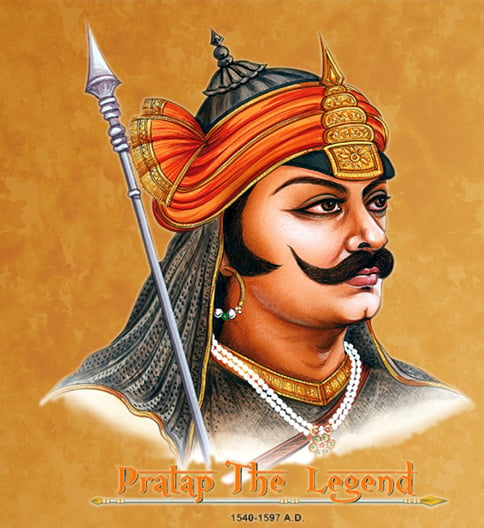

Maharana Pratap
9 May 1540-19 January 1597
ONR OF THE GREATEST PATRIOT KINGS OF THE WORLD
Maharana Pratap (real name Pratap Singh-1) (9 May 1540-19 January 1597) was the 13th-century Mewar ruler of the Sisodia Dynasty born at Kumbhalgarh Rajasthan. His parents were Uday Singh-2 and Jaywanta Bai. Maharana Pratap is popularly known for his resistance against the Imperial Mughals of Delhi and for the famous Battle of Haldighati and the reconquest of Mewar. After his death in 1597, he was succeeded by his son Amar Singh-1.
Maharana Pratap is a very important topic under the Medieval History section of the General Studies-1 syllabus of the IAS mains exam and, therefore is crucial for the UPSC IAS Exam preparations. Join IAS coaching today and take a step closer to realising your dream of becoming an IAS officer
Films of Maharana Pratap
- 1988–1989: Bharat Ek Khoj, broadcast on Doordarshan, where he was played by Puneet Issar
- 2012: Maharana Pratap: The First Freedom Fighter
- 2013–2015: Jodha Akbar, broadcast on Zee TV, where he was played by Anurag Sharma
- 2016: ABP News presented Bharatvarsha, in which episode 8 showcased the story of Maharana Pratap.
- 2023: Deepraj Rana as Maharana Pratap in Webseries Taj: Divided by Blood on Zee5